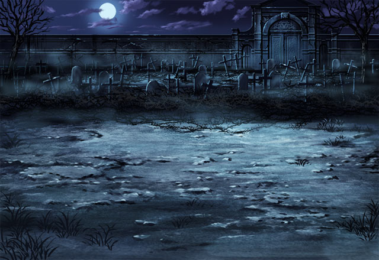

ルジーナ
お前が無事ってことは カルはしっかり働いたようだな。
ルジーナ
どうせ、エリオールに裏切られたとかで ボロボロになってるんだろう？
ルジーナ
女の泣き顔なんざ見せられても 面倒なだけだからな。
カル
パリスさんは俺たちが 思った以上に強い女性ってことだよ。
カル
パリスさんは、エリオールに会って 直接話を聞くって決心したんだ。
ルジーナ
んなことしたって 答えはわかってるだろーが！
パリス
それでも私はエリオール様から 直接聞きたいの……。
ルジーナ
チッ……。 こいつは本物のバカだったってことか。
セリア
女性の涙から逃げるような男には 女心はわからないわ。
パリス
迷惑をかけて申し訳ないけど、 力を貸してほしいの。
パリス
私がエリオール様に再び会って 話をするために……。
ルジーナ
せいぜい、カルやセリアに 助けてもらうんだな！
カル
ハハッ、あれもルジーナなりの 優しさだろう。
カル
俺たちより先に進んで 危険がないか調べてくれるんだからな。
カル
パリスさんは俺とセリアで クリスタルパレスまで連れて行く。
カル
お前はルジーナと同じように 先行して危険があれば知らせてくれ。
カル
俺もエリオールさんには 一言、言いたいこともあるからな。
カル
バシンとって……。 先に手が出そうだな……。
パリス
何て言っていいかわからないけど 私はあなたのことは信じられるの。